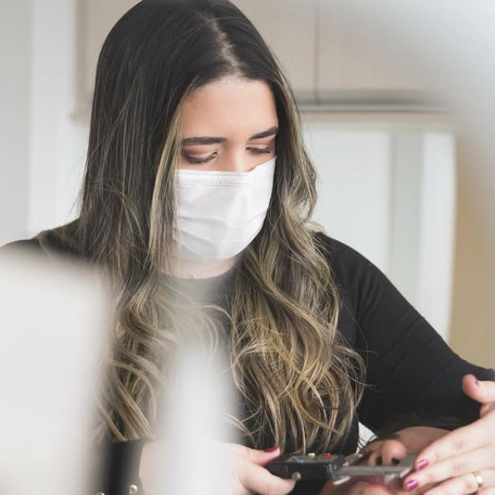
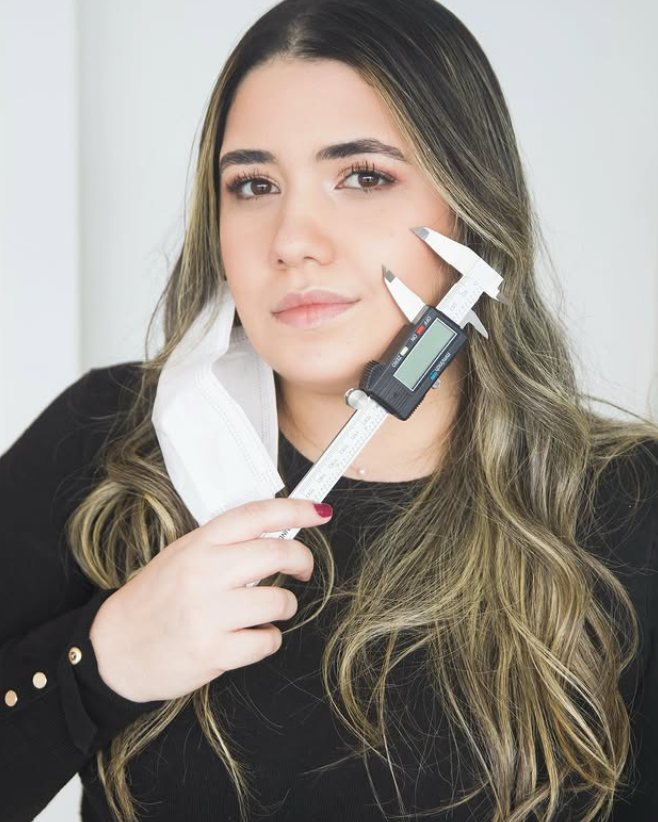
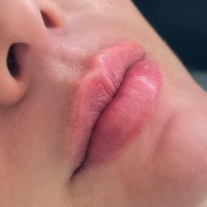
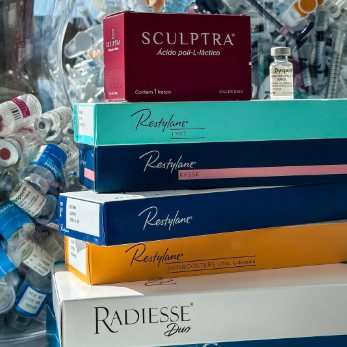
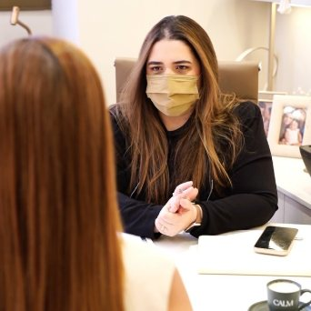
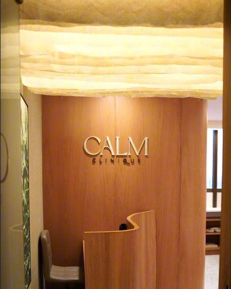
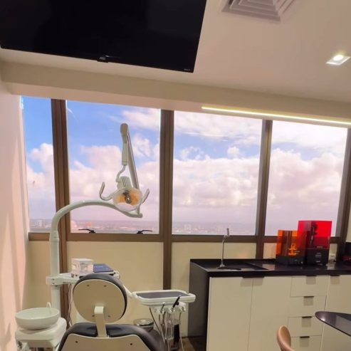
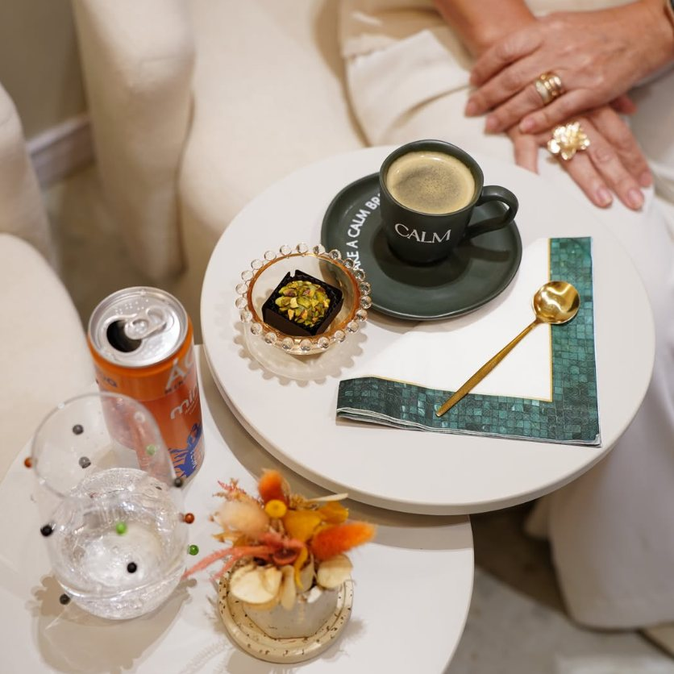

ProporçãoHarmonização orofacial
Planejamento do conjunto do rosto, em etapas. Proporção e equilíbrio, sem apagar o que é seu.

Harmonização orofacial · Dra. Amanda Santos
Na CALM Clinique o plano nasce do seu rosto, não de um modelo pronto. Avaliação individual, resultado natural e acompanhamento que continua muito depois da aplicação.
Dra. Amanda Santos · Cirurgiã-dentista · CD 13249/PE
Atendimento individual, com hora marcada.
Nenhum protocolo de prateleira. O que entra no plano depende do seu rosto, da sua rotina e do que você quer preservar.
Técnica e equipamento escolhidos para reduzir dor, edema e tempo de recuperação. Segurança em cada etapa do procedimento.
A relação não termina na cadeira. O envelhecimento facial é gerenciado ao longo dos anos, com retornos e ajustes.
Quem conduz
Cirurgiã-dentista dedicada à harmonização orofacial, Amanda fundou a CALM Clinique em torno de uma ideia simples: beleza não se copia de um padrão, se planeja a partir de quem você já é.
A consulta começa pela conversa e pela análise das proporções do seu rosto. Só então vem a indicação, sempre com a medida certa e nunca com excesso. Nem todo procedimento da moda entra no plano: alguns simplesmente não são a melhor escolha para o seu caso, e isso é dito com todas as letras.
Áreas de atuação
Nada é indicado por telefone ou pelo direct. O que está aqui é ponto de partida. A indicação real vem da avaliação presencial.

ProporçãoPlanejamento do conjunto do rosto, em etapas. Proporção e equilíbrio, sem apagar o que é seu.

VolumeÁcido hialurônico para sulcos, contorno e projeção. Estrutura devolvida onde o tempo tirou.

FirmezaColágeno estimulado pelo próprio corpo. Resultado que aparece devagar e, por isso, convence.

ContinuidadeGerenciamento ao longo dos anos, com retornos programados. Envelhecer bem também se planeja.
Como funciona
O mesmo caminho para todo mundo. O que muda é o que a sua avaliação revela.
A conversa vem antes de qualquer indicação: o que incomoda você, o que já tentou e o que não quer perder do seu rosto.
Análise das proporções e registro fotográfico padronizado. O plano é individual, escrito e explicado etapa por etapa, inclusive o que não vale a pena fazer.
Protocolos de segurança e tecnologia escolhida para o seu conforto. Você entende o que está sendo feito enquanto é feito.
Retorno para ajuste fino e canal aberto no pós. A partir daí, o envelhecimento facial passa a ser acompanhado ao longo do tempo.



A clínica
Um atendimento por vez, com hora marcada e tempo de sobra. A conversa vem primeiro e sem pressa. O procedimento é a última parte da visita, não a primeira.
“A beleza não está nos padrões.”Dra. Amanda Santos · CALM Clinique
Antes de agendar
Não. A avaliação é uma consulta à parte: conversa, análise das proporções e plano individual. Se houver indicação e você quiser aplicar no mesmo dia, é possível, mas nunca é condição.
Esse é justamente o critério do consultório. Trabalhamos com doses conservadoras e resultado natural. Quando um procedimento da moda não é a melhor escolha para o seu caso, ele não entra no plano.
Usamos anestésico tópico e, quando indicado, anestesia local, além de técnica e equipamento escolhidos para reduzir dor e edema. A maioria dos pacientes descreve como um desconforto breve.
Depende do produto, da região e do seu metabolismo. A estimativa do seu caso entra no plano por escrito, junto com o calendário de retornos, porque o acompanhamento é o que mantém o resultado ao longo dos anos.
Não existe idade certa. Existe indicação: atendemos a partir dos 18 anos e o critério é sempre o que a avaliação mostra.
Pelo link oficial de agendamento da clínica, bit.ly/calmclinique, ou pelo direct do @calmclinique.
Agende sua avaliação
A avaliação é individual e sem compromisso de procedimento no mesmo dia. Você sai dela sabendo o que dá para fazer, em que ordem e o que é melhor não fazer.
Agendamento oficial
Instagram da clínica
Instagram da Dra. Amanda
Dra. Amanda Santos
Cirurgiã-dentista · CD 13249/PE
Responsável técnica da CALM Clinique